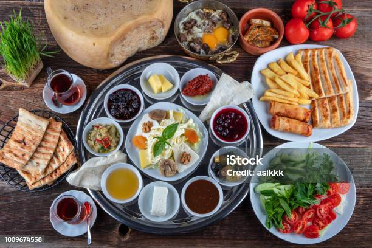
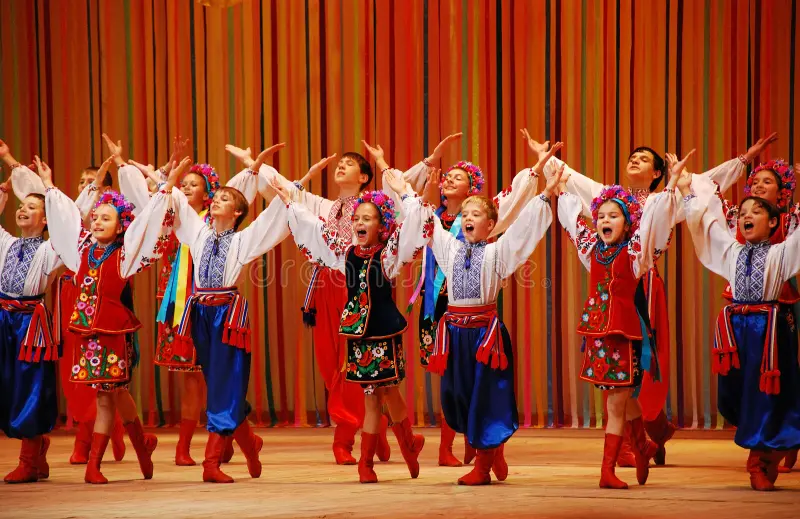
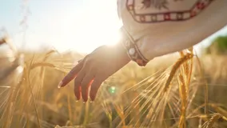

ㅤㅤPrudentópolis, no Paraná, é chamada de "Capital Ucraniana do Brasil" porque cerca de 75% da população tem ascendência ucraniana. A cidade mantém viva a cultura desse povo, com igrejas em estilo bizantino, festas tradicionais, danças folclóricas e culinária típica.
ㅤㅤAlém disso, a língua ucraniana ainda é falada por muitos moradores e ensinada nas escolas. Prudentópolis também é famosa por suas cachoeiras gigantes, como o Salto São Francisco (196m), atraindo turistas para o ecoturismo. A cidade é um verdadeiro pedaço da Ucrânia no Brasil! 🇺🇦🇧🇷
Prudentópolis: a capital ucraniana do Brasil
Descendentes de ucranianos
Maior comunidade ucraniana do Brasil fica em Prudentópolis; dos 52 mil habitantes, 75% são de descendentes ucranianos.
Saiba MaisUcranianos refugiados no Brasil
O primeiro grupo de ucranianos que desembarcou no Brasil, fugido da guerra, já conseguiu emprego e nova moradia.
Saiba maisCutura ucraniana no Brasil
Gastronomia

ㅤㅤA influência da culinária ucraniana no Brasil é bastante visível, especialmente em pratos típicos que foram incorporados ao cotidiano de muitas famílias brasileiras. Alguns exemplos são:
• Pierogi: Uma espécie de pastel recheado, geralmente com batata, queijo ou carne, que se tornou bastante popular, especialmente no sul do Brasil.
• Borscht: Uma sopa feita com beterraba, também conhecida e apreciada por algumas famílias.
• Kielbasa: Linguiça típica ucraniana que foi adaptada para o paladar brasileiro.
Música e Dança

ㅤㅤA música tradicional ucraniana e as danças típicas como o hopak e o kolomiyka também marcaram as festividades e eventos culturais nas comunidades de descendentes de ucranianos. Bandas folclóricas e festivais de música ucraniana são comuns, promovendo a preservação e a divulgação das tradições musicais do país.
Festividades e Celebrações

ㅤㅤA Festa do Trigo, realizada em algumas cidades do Paraná, como Prudentópolis, é uma das maiores celebrações de cultura ucraniana no Brasil. Durante este evento, ocorrem danças folclóricas, apresentações musicais, competições de culinária e outras atividades que celebram as tradições ucranianas. Além disso, o Natal ucraniano é celebrado com a tradicional ceia, que inclui alimentos típicos e rituais especiais.